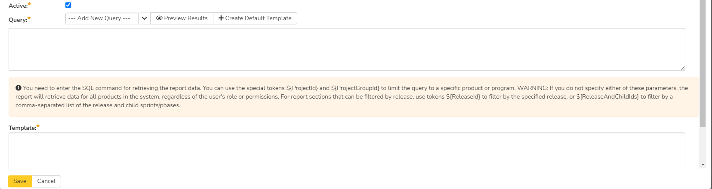

System: Reporting
SpiraPlan has a powerful set of reports and charts available out of the box that cover most product's needs. However, there is often a need to be able to generate custom reports and graphs that are specific to your organization. In this section, you can create custom graphs and reports for your users to use.
Edit Reports
The "Edit Reports" administration page lets you create custom reports in the system that your users can run in the various products they have access to. Note that the report definitions themselves are global to the system and therefore available in all products.

The list of report definitions contains both the standard (default) reports that ship with the system and any custom reports that you have defined. However, any of the reports listed with the "Default" option checked will not be editable. So, if you want to modify one of the built-in reports to make it better suit your needs, you should instead click on the "Clone" button next to the report and make a copy of the report that you can then modify. You can view any of the default reports by clicking on the associated "View" button.
To edit an existing non-default report, click on the "Edit" button. To add a new report from scratch, click on the "Add New Report" option at the bottom of the list. Either of these will take you to the Report editing screen:

The top-half of this screen (illustrated above) lets you specify the name of the report, the long description (displayed in tooltips but not in the report itself) and a rich-text footer and header. The header and footer will be displayed at the top and bottom of the generated report.
In addition, you can specify whether the report is active (and therefore can be used in the SpiraPlan reports center) and which report category heading the report will appear in. This is also used to determine which role(s) are able to run the report (e.g. a user that has permissions to view requirements will be able to run all reports listed under the "Requirement Reports" category).
The lower-half of the screen displays the list of formats, standard sections and custom sections that make up the report:

The list of formats is fixed in the system, you can simply choose which formats this specific report will be available in. The reporting engine will take care of converting your report into the target format, you just need to specify which type(s) are applicable.
a) Standard Sections
The list of standard sections contains a list of the various pre-defined report sections that are to be included in the report. A standard section consists of a set of nested queries and embedded elements that will return back data. For example, the "Requirements Details" section consists of a list of all the requirements in a product, together with the associated test cases, tasks, custom properties, attachments, discussions, change history, source code revisions and other related items.
With a standard section, you cannot change the underlying data query, but you can change the header, footer and XSLT template used to format the results:

When you either click on "Add New Standard Section" or the "Customize" link next to an existing standard section, the popup dialog illustrated above will be displayed. On this page you can change the following fields:
-
Name -- Choose the name of the standard report section you want to use from the dropdown list. Changing the name of the section will automatically update the Description field below.
-
Description -- This is the description of the report section, it is not displayed in the final report.
-
Header -- This is the header that will be displayed before the dynamic data retrieved as part of the report section. You can enter in formatted rich text in this field.
-
Footer -- This is the footer that will be displayed after the dynamic data retrieved as part of the report section. You can enter in formatted rich text in this field.
-
Template -- This is the eXtensible Markup Language Stylesheet Transform (XSLT) used to transform the raw XML data from the report query into the final HTML display format. When you choose/change the name dropdown list, clicking on the "Create Default Template" will populate this field with the default template used to render the data.
When you first create a new standard report section, we recommend using the option to "Create Default Template". This will then allow you to run the report in the main reports center and have all the available data fields displayed in the standard format. If you would like to customize the content of the section, you have several options:
-
Customize Header/Footer -- if you want to keep the data and layout as-is, you can simply add a custom header and footer to add organization specific information into the report.
-
Customize the Data/Layout -- if you want to customize how the data is displayed and formatted, you will need to edit the XSLT Template. You can learn more about XSLT at the W3Schools website (http://www.w3schools.com/xsl). However, the recommended approach is to first run the "Raw XML" format report from the main SpiraPlan reports center. An example XML report is partially shown below:
1 2 3 4 5 6 7 8 9 10 11 12 13 14 15 16 17 18 19 20 21 22 23 24 25 26 27 28 29 30 31 32 33 34 35 36 37 38 39 40 41 42 43 44 45 46 47 48 49 50 51 52 53 54 55 56 57 58 59 60 61 62 63 64 65 66 67 68 69 70 71 72 73 74 75 76 77 78 79 80 81 82 83 84 85 86 87 88 89 90 91 92 93 94 95 96 97 98 99 100 101 102 103 104 105 106 107 108 109 110 111 112 113 114 115 116 117 118 119 120 121 122 123 124 125 126 127 128 129 130 131 132 133 134 135 136 | ?xml version="1.0" encoding="UTF-8" standalone="yes"?
Report
Title
Requirements Detailed Report
/Title
ProductData
Product
ProjectId1/ProjectId
ProjectGroupId2/ProjectGroupId
NameLibrary Information System/Name
DescriptionSample application that allows users to manage books, authors and lending records for a typical branch library/Description
Websitewww.libraryinformationsystem.org/Website
CreationDate2005-11-30T19:00:00/CreationDate
ActiveYnY/ActiveYn
WorkingHours8/WorkingHours
WorkingDays5/WorkingDays
NonWorkingHours0/NonWorkingHours
TimeTrackIncidentsYnY/TimeTrackIncidentsYn
TimeTrackTasksYnY/TimeTrackTasksYn
EffortIncidentsYnY/EffortIncidentsYn
EffortTasksYnY/EffortTasksYn
TasksAutoCreateYnY/TasksAutoCreateYn
ReqDefaultEffort480/ReqDefaultEffort
TaskDefaultEffort360/TaskDefaultEffort
ProductGroupNameInternal Products/ProductGroupName
/Product
/ProductData
RequirementData
Requirement
RequirementId1/RequirementId
ProjectId1/ProjectId
ScopeLevelId3/ScopeLevelId
AuthorId2/AuthorId
NameFunctional System Requirements/Name
CreationDate2003-11-30T19:00:00/CreationDate
LastUpdateDate2003-11-30T19:00:00/LastUpdateDate
IndentLevelAAA/IndentLevel
ExpandedYnY/ExpandedYn
VisibleYnY/VisibleYn
SummaryYnY/SummaryYn
AttachmentsYnN/AttachmentsYn
CoverageCountTotal21/CoverageCountTotal
CoverageCountPassed10/CoverageCountPassed
CoverageCountFailed3/CoverageCountFailed
CoverageCountCaution1/CoverageCountCaution
CoverageCountBlocked1/CoverageCountBlocked
PlannedEffort8700/PlannedEffort
TaskEstimatedEffort11400/TaskEstimatedEffort
TaskActualEffort7570/TaskActualEffort
TaskProductedEffort3855/TaskProductedEffort
TaskRemainingEffort11485/TaskRemainingEffort
TaskCount42/TaskCount
TaskPercentOnTime59/TaskPercentOnTime
TaskPercentLateFinish6/TaskPercentLateFinish
TaskPercentNotStart7/TaskPercentNotStart
TaskPercentLateStart28/TaskPercentLateStart
ScopeLevelNameIn Progress/ScopeLevelName
AuthorNameFred Bloggs/AuthorName
HasDiscussionChangedfalse/HasDiscussionChanged
IsDeletedfalse/IsDeleted
CustomProperties
CustomProperty
AliasURL/Alias
NameCustom_01/Name
TypeText/Type
/CustomProperty
CustomProperty
AliasDifficulty/Alias
NameCustom_02/Name
TypeList/Type
/CustomProperty
CustomProperty
AliasRequirement Type/Alias
NameCustom_03/Name
TypeList/Type
/CustomProperty
CustomProperty
AliasNotes/Alias
NameCustom_04/Name
TypeText/Type
/CustomProperty
CustomProperty
AliasReview Date/Alias
NameCustom_05/Name
TypeDate/Type
/CustomProperty
CustomProperty
AliasDecimal/Alias
NameCustom_06/Name
TypeDecimal/Type
/CustomProperty
/CustomProperties
Discussions /
TestCases /
Tasks /
Attachments /
History
HistoryChangeSetType
ChangeTypeId1/ChangeTypeId
ChangeTypeNameModified/ChangeTypeName
/HistoryChangeSetType
HistoryChangeSetType
ChangeTypeId2/ChangeTypeId
ChangeTypeNameDeleted/ChangeTypeName
/HistoryChangeSetType
HistoryChangeSetType
ChangeTypeId3/ChangeTypeId
ChangeTypeNameAdded/ChangeTypeName
/HistoryChangeSetType
HistoryChangeSetType
ChangeTypeId4/ChangeTypeId
ChangeTypeNamePurged/ChangeTypeName
/HistoryChangeSetType
HistoryChangeSetType
ChangeTypeId5/ChangeTypeId
ChangeTypeNameRollback/ChangeTypeName
/HistoryChangeSetType
HistoryChangeSetType
ChangeTypeId6/ChangeTypeId
ChangeTypeNameUndelete/ChangeTypeName
/HistoryChangeSetType
HistoryChangeSetType
ChangeTypeId7/ChangeTypeId
ChangeTypeNameImported/ChangeTypeName
/HistoryChangeSetType
HistoryChangeSetType
ChangeTypeId8/ChangeTypeId
ChangeTypeNameExported/ChangeTypeName
/HistoryChangeSetType
/History
Requirements /
Incidents /
SourceCodeRevisions /
/Requirement
/RequirementData
/Report
|
This XML data is then converted by the XSLT template into HTML format so that it can be included into the final generated report. An example fragment of the XSLT template looks like:
1 2 3 4 5 6 7 8 9 10 11 12 13 14 15 16 17 18 19 20 21 22 23 24 25 26 27 28 29 30 31 | ?xml version="1.0" encoding="utf-8"?
xsl:stylesheet version="1.0" xmlns:xsl="http://www.w3.org/1999/XSL/Transform" xmlns:msxsl="urn:schemas-microsoft-com:xslt" exclude-result-prefixes="msxsl"
xsl:template match="/RequirementData"
xsl:for-each select="Requirement"
div
xsl:attribute name="style"
padding-left: xsl:value-of select="string-length(IndentLevel)*2"/px;
/xsl:attribute
xsl:if test="SummaryYn='Y'"
div class="Title2"
RQ:xsl:value-of select="RequirementId"/ - xsl:value-of select="Name"/
/div
div class="Description"
xsl:value-of select="Description" disable-output-escaping="yes"/
/div
br /
/xsl:if
xsl:if test="SummaryYn='N'"
xsl:attribute name="style"
padding-left: xsl:value-of select="string-length(IndentLevel)*2"/px;
/xsl:attribute
div class="Title3"
RQ:xsl:value-of select="RequirementId"/ - xsl:value-of select="Name"/
/div
p
xsl:value-of select="Description" disable-output-escaping="yes"/
/p
/xsl:if
/div
/xsl:for-each
/xsl:template
|
So using a combination of XSLT and the Raw XML report format, you can generate a customized view of the standard report section that will be included in the final report.
Sometimes, however you want to be able to create a completely custom report that includes customized data as well as a custom format. In which case you need to use a custom report section instead.
b) Custom Section
Back on the main report details page, if you click on "Add New Custom Section", the following dialog box will be displayed:

On this page you can enter / change the following fields:
-
Name -- Enter the name of the new custom report section that you will be adding to the report. This is not displayed in the final report
-
Description -- This is the description of the custom section, it is not displayed in the final report.
-
Header -- This is the header that will be displayed before the dynamic data retrieved as part of the report section. You can enter in formatted rich text in this field.
-
Footer -- This is the footer that will be displayed after the dynamic data retrieved as part of the report section. You can enter in formatted rich text in this field.
-
Active -- You should make sure this checkbox is checked if you want the custom section to appear in the final report.
Further down on the page you can actually enter the custom query and associated XSLT template:

On this page you need to first choose the appropriate reportable entity from the dropdown list. In the example illustrated above, we have selected the "Requirements" reportable entity. This will automatically populate the following query in the Query editor:
select value R from SpiraTestEntities.R_Requirements as R where R.PROJECT_ID = ${ProjectId}
This query tells SpiraPlan to select all of the rows in the R_Requirements collection that are in the current product and include all of the columns in the final report. This generally will result in more columns than is desirable, so you should click on the "Preview Results" option to view a list of the various columns and the sample data. That will help you decide which columns are important for your report. You can then adjust the query to only include those columns:
select R.REQUIREMENT_ID, R.NAME from SpiraTestEntities.R_Requirements as R where R.PROJECT_ID = ${ProjectId}
In this modified query, we have replaced the keyword value with the specific column names. When you use the "Preview Results" option on this query, you will only see the two desired columns:

Once you have verified that the data being returned matches your requirements, click on the "Create Default Template" option and SpiraPlan will automatically generate a new XSLT template that displays just these columns in a nice table format:

You can now click the [Save] button to save your changes to the report.
You may have noticed that we had a special token in the query {ProjectId}**, this token will be evaluated during the generation of the report and ensures that only items in the current product are included. If you want to include all the items in a specific Program, you should instead use the token **. If you don't use either token, the report will include all the items in the entire system, across all products and groups.
For example:
-
select value R from SpiraTestEntities.R_Requirements as R where R.PROJECT_ID = ${ProjectId} will display all the requirements in the specific product
-
select value R from SpiraTestEntities.R_Requirements as R where R.PROJECT_GROUP_ID = ${ProjectGroupId} will display all the requirements in the specific program
-
select value R from SpiraTestEntities.R_Requirements as R will display all the requirements in the entire system
For more information on creating custom report queries, please refer to the knowledge base articles on the Inflectra customer support website: http://www.inflectra.com/Support.
Warning: If you create a report that doesn't have either ${ProjectId} or ${ProjectGroupId} in the WHERE clause you could end up displaying data to a user that shouldn't have permission to see that data.
Edit Graphs
The "Edit Graphs" administration page lets you create custom graphs and charts in the system that your users can run in the various products they have access to. Note that the graph definitions themselves are global to the system and therefore available in all products.
When you click on the 'Edit Graphs' menu option, the system will display a list of any existing custom graphs that have been already defined (it will not list the standard graphs that come with the system):

To add a new graph, click on the 'Add New Custom Graph' option in the bottom of the table:

This is the same screen you will see if you click on the Edit button for an existing graph. In addition, the graph list page has the following additional operations:
-
Clone -- this will make a copy of the graph with '- Copy' appended to the name
-
Delete -- this will permanently delete the selected custom graph.

On the graph editing page, you can enter the following fields:
-
Name -- This is the short name of the graph that will be displayed to users when they choose to display a custom graph.
-
Description -- This is the longer description of the graph, and should be used to explain what the data in the graph shows, what the purpose of the graph is and how the data should be interpreted. This is what the user will see when they click on the help link on the graph.
-
Active -- If you set this to "No", the graph will not be accessible by end users
-
Position -- use this to specify the relative position of the graph in the list of custom graphs.
-
Query -- this is where you enter the actual query used to generate the graph data. We shall discuss this below.
Entering the Query
We recommend that you first choose the appropriate reportable entity from the dropdown list. In the example illustrated above, we have selected the "Test Runs" reportable entity.

This will automatically populate the following query in the Query editor:
select value R from SpiraTestEntities.R_TestRuns as R where R.PROJECT_ID = ${ProjectId}
This query tells SpiraPlan to select all of the rows in the R_TestRuns collection that are in the current product and include all of the columns in the final report. You cannot graph non-numeric columns, so usually we'd recommend clicking Display Data Grid to see all of the columns that you can use in the graph:

This will help you decide which columns are important for your graph. You can then adjust the query to only include those columns:
select R.EXECUTION_STATUS_NAME, COUNT (R.TEST_RUN_ID) as COUNT
from SpiraTestEntities.R_TestRuns as R
where R.PROJECT_ID = ${ProjectId}
group by R.EXECUTION_STATUS_NAME
In this modified query, we have replaced the keyword value with the specific column names. We have also added an aggregation function called COUNT to count the number of test runs and group by the execution status name column. SpiraPlan uses a modified SQL language called Entity SQL. For more information on creating custom graph queries, please refer to the knowledge base articles on the Inflectra customer support website: http://www.inflectra.com/Support.
When you click Display Data Grid, you will now see:

The graphing module requires that the first column be the list of categories to display on the x-axis of the graph. It can be any format (text, numeric, dates, etc.). The remaining columns have to be numeric and will be used to display the different data ranges. The column name will be used to display the data range. For donut graphs, only one data range is supported, for line/bar charts, you can have multiple ranges.
You can see how the graph looks in the three different styles (donuts, bar, line):
a) Donut Graph

b) Bar Graph
c) Line Graph
Once you are happy with your custom graph, click the Save button to commit the changes. If the Active flag is set to "Yes" then the graph will be available for end users to use.
Warning: If you create a graph that doesn't have either ${ProjectId} or ${ProjectGroupId} in the WHERE clause you could end up displaying data to a user that shouldn't have permission to see that data.